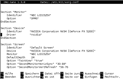
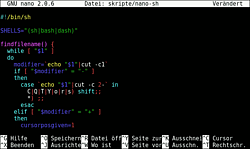

Nano
Dieser Artikel wurde für die folgenden Ubuntu-Versionen getestet:
Dieser Artikel ist größtenteils für alle Ubuntu-Versionen gültig.
Zum Verständnis dieses Artikels sind folgende Seiten hilfreich:

Nano  ist ein einfacher Editor, der die Bearbeitung von Dateien in einem Terminal bzw. auf der Konsole erlaubt. Er ist besonders wichtig, wenn keine grafische Oberfläche installiert ist oder wenn diese aus irgendeinem Grund nicht mehr gestartet werden kann und man nur noch Zugriff auf die Konsole hat. Im Vergleich zu anderen Editoren, wie z.B. VIM, hat Nano einen geringeren Funktionsumfang, eignet sich aber gerade deshalb für kleinere, schnelle Bearbeitungen.
ist ein einfacher Editor, der die Bearbeitung von Dateien in einem Terminal bzw. auf der Konsole erlaubt. Er ist besonders wichtig, wenn keine grafische Oberfläche installiert ist oder wenn diese aus irgendeinem Grund nicht mehr gestartet werden kann und man nur noch Zugriff auf die Konsole hat. Im Vergleich zu anderen Editoren, wie z.B. VIM, hat Nano einen geringeren Funktionsumfang, eignet sich aber gerade deshalb für kleinere, schnelle Bearbeitungen.
Installation¶
Nano ist bei Ubuntu und allen -Varianten standardmäßig vorinstalliert.
Verwendung¶
Im Prinzip funktioniert Nano wie jeder andere (grafische) Editor auch. Er wird auf der Kommandozeile [1] gestartet:
nano [OPTIONEN] [DATEI]
Gibt man keine Datei an, so kann eine neue Datei anlegt und diese im Verzeichnis, in welchem man sich gerade befindet, abgespeichert werden. Ein Übersicht über die Optionen erhält man mit:
nano --help
Viel häufiger kommt es jedoch vor, dass man eine bereits bestehende Datei, z.B. die /etc/apt/sources.list, bearbeiten will. Da man für die Bearbeitung von Systemdateien Root-Rechte benötigt, muss man Nano mit sudo aufrufen. Um direkt eine bestehende Datei in Nano zu öffnen, übergibt man den Namen der Datei als Befehlszeilenoption. Beispiel:
sudoedit /etc/apt/sources.list
Jetzt öffnet Nano die Datei /etc/apt/sources.list mit Root-Rechten. Mit den Pfeiltasten kann man nun innerhalb der Datei navigieren. Befehle wie "Speichern" und "Beenden" werden über Tastenkombinationen aufgerufen. Diese sind ganz unten im Editor-Fenster aufgeführt. Hier findet man die Tastenkombination gefolgt von dem damit verknüpften Befehl, wobei das Zeichen "^" für die Taste Strg steht.
Tastenkürzel¶
| Tastenkürzel (Liste unvollständig) | ||
| Tasten (beide Spalten sind gleichwertig) | Aktion | |
| Strg + G | F1 | Vollständige Liste der Tastenkürzel (M ("Meta") mit Alt oder Alt + ⇧ aufrufbar.) Hilfe anzeigen |
| Strg + X | F2 | Datei schließen |
| Strg + O | F3 | Datei speichern |
| Strg + W | F6 | Suche |
| Alt + W | F16 | Weitersuchen |
| Alt + R | Strg + Alt Gr + ß | Suchen/Ersetzen |
| Alt + ⇧ + Strg | Alt + 6 | Zeile (oder Markierung) in Zwischenablage kopieren |
| Strg + K | F9 | Zeile (oder Markierung) ausschneiden und in Zwischenablage kopieren |
| Strg + U | F10 | Inhalt der Zwischenablage einfügen |
| Alt + A | Strg + 6 | Markierung beginnen/ Markierung aufheben |
| Strg + A | Pos1 | Zum Zeilenanfang gehen |
| Strg + E | Ende | Zum Zeilenende gehen |
| Alt + Alt Gr + < | Alt + Alt Gr + ß | Zum Dateianfang gehen |
| Alt + ⇧ + 7 | Alt + ⇧ + ß | Zum Dateiende gehen |
| Alt + G | Strg + ⇧ + - | Zu einer bestimmten Zeile springen |
| Alt + D | Dateistatistiken anzeigen | |
| Strg + C | Aktuelle Cursorposition anzeigen | |
| Alt + C | Aktuelle Cursorposition ständig anzeigen ein/aus | |
| Alt + X | Hilfezeilen anzeigen ein/aus | |
| Alt + O | Leerzeile unterhalb der Titelzeile ein/aus | |
| Alt + Y | Syntaxhervorhebung ein/aus | |
Syntaxhervorhebung¶
Hinweis:
Syntaxhervorhebung kann Nano wesentlich verlangsamen.

Aktivierung¶
Nano besitzt eine nicht perfekte, aber brauchbare Syntaxhervorhebung. Um diese zu aktivieren, benötigt man zunächst Definitionsdateien. Hier ist angegeben, auf welche Dateien die Syntaxhervorhebung angewandt werden soll und was in welcher Farbe eingefärbt wird. Einige Beispieldateien sind bereits im Verzeichnis /usr/share/nano/ vorhanden. Darüber hinaus gibt es im Anhang dieses Artikels wesentlich verbesserte Versionen von einigen dieser Dateien.
Damit Nano die Definitionsdateien auch verwendet, müssen in der Konfigurationsdatei ~/.nanorc entsprechende Verweise eingefügt werden. Eine vorgefertigte Datei kann als .nanorc  heruntergeladen werden. Durch Eingabe der folgenden Befehle werden die genannten Konfigurationsdateien automatisch heruntergeladen:
heruntergeladen werden. Durch Eingabe der folgenden Befehle werden die genannten Konfigurationsdateien automatisch heruntergeladen:
mkdir ~/.nano wget "http://wiki.ubuntuusers.de/_attachment?target=Nano/highlighterliste" --quiet -O - | while read prefix; do wget "http://wiki.ubuntuusers.de/_attachment?target=Nano/$prefix.nanorc" --quiet -O ~/.nano/$prefix.nanorc; done wget "http://wiki.ubuntuusers.de/_attachment?target=Nano/.nanorc" -O ~/.nanorc
Nach dem Neustart von Nano wird die Syntaxhervorhebung angewandt.
Experten-Info:
Man kann die .nanorc-Dateien auch in einen anderen Ordner speichern, wenn man die include-Anweisungen in der ~/.nanorc entsprechend anpasst.
Farben anpassen¶
Die voreingestellten Farben kann man in den unter ~/.nano/ im Homeverzeichnis gespeicherten Dateien ändern. Bspw. steht in der ~/.nano/html.nanorc:
1 2 3 4 5 | syntax "html" "\.(html?|xml|svg)$" # Quelltext icolor brightgreen start="<code" end="</code>" # Tags color brightblue start="<" end=">" |
Die mit "syntax" beginnende Zeile sollte man nicht ändern, da sie für die automatische Einfärbung von XML-Dateien sorgt. Zeilen, die mit der Raute beginnen, sind Kommentare und werden von Nano ignoriert. In den restlichen Zeilen stehen die Farbdefinitionen. Sie folgen dem Schema:
1 2 3 4 5 6 | (i)color vordergrundfarbe ["was wird eingefärbt"] # oder (i)color ,hintergrundfarbe ["was wird eingefärbt"] # oder (i)color vordergrundfarbe,hintergrundfarbe ["was wird eingefärbt"] # Das i in icolor steht für "ignoriere Groß-/Kleinschreibung" |
Soll Quelltext hellrot auf blau erscheinen und Tags dunkelgrün, sieht die Änderung so aus:
1 2 3 4 5 | syntax "html" "\.(html?|xml|svg)$" # Quelltext icolor brightred,blue start="<code" end="</code>" # Tags color green start="<" end=">" |
Experten-Info:
Die Einfärbung geschieht mit Hilfe regulärer Ausdrücke. Weitere Informationen dazu findet man im Wiki unter grep
Shellskripte unabhängig vom Dateinamen einfärben¶
Manuell¶
Die Entscheidung darüber, ob und wie eine Datei eingefärbt wird, fällt Nano aufgrund des Dateinamens. So steht z.B. in der sh.nanorc:
syntax "sh" "\.sh$"
Dies führt dazu, dass Dateien, deren Namen auf .sh enden, mit diesem Schema eingefärbt werden. Oftmals haben Shell-Skripte jedoch keine besondere Dateiendung und werden deshalb von Nano nicht erkannt. In diesem Fall kann man mit folgendem Befehl die Einfärbung mit dem Schema "sh" erzwingen:
nano -Y sh [Datei]
Hinweis:
Selbstverständlich funktioniert das auch mit anderen Farbschemata, wie z.B. "html". Das ist aber nur selten nötig, da hier fast immer die Dateiendung zur Erkennung des Inhalts ausreicht.
Automatisch¶
Eine weitaus komfortablere Möglichkeit ist ein Skript, das untersucht, ob die zu öffnende Datei ein Shell-Skript ist, und entsprechend den o.g. Befehl automatisch ausführt. Ein solches Skript ist bei hier herunterladbar . Man speichert es z.B. als ~/bin/nano-sh und fügt ans Ende der Datei ~/.bashrc folgende Zeile an:
alias nano='~/bin/nano-sh'
Am schnellsten geht das mit:
mkdir ~/bin wget "http://wiki.ubuntuusers.de/_attachments/Nano/nano-sh" -O ~/bin/nano-sh chmod +x ~/bin/nano-sh echo "alias nano='~/bin/nano-sh'" >> ~/.bashrc
Bei der nächsten Anmeldung werden dann alle Shell-Skripte in Nano mit dem Schema "sh" eingefärbt.
Sonstige Dateien einfärben¶
Fast immer markiert die Raute einen Kommentar und Anführungszeichen schließen eine Zeichenkette (String) ein. Daher empfiehlt es sich, diese Elemente immer einfärben zu lassen. Hierfür gibt es das Farbschema "default". Es wird auf alle Dateien angewandt, die nicht mit einem der anderen Schemata markiert werden. Um das default-Schema zu aktivieren, genügt es, in der Datei ~/.nanorc bei der letzten Zeile:
# include "~/.nano/default.nanorc"
das Rautezeichen zu entfernen. Ab dem Neustart von Nano werden Kommentare, Strings, Zahlen und Sonderzeichen standardmäßig hervorgehoben.
Hinweis:
Dies funktioniert nur, wenn man wie oben beschrieben die Dateien heruntergeladen hat.
Will man doch einmal eine Datei öffnen, ohne dass jegliche Syntaxhervorhebung angewandt wird (auch nicht das Schema "default"), so muss man nun Nano mit:
nano -Y none [DATEI]
starten, oder zur Laufzeit mit Alt + Y die Hervorhebung deaktivieren.
Problembehebung¶
Sollten die Definitionsdateien für die Syntaxhervorhebung, die in der nanorc eingetragen wurden, nicht oder nur teilweise erkannt werden, dann stört sich das Programm möglicherweise daran, dass "include"-Einträge in der globalen Konfigurationsdatei /etc/nanorc und der lokalen ~/.nanorc vorhanden sind. Abhilfe schafft dann die Definitionsdateien in einer der beiden Dateien auzukommentieren.
 Programmübersicht
Programmübersicht- Erstellt mit Inyoka
-
 2004 – 2017 ubuntuusers.de • Einige Rechte vorbehalten
2004 – 2017 ubuntuusers.de • Einige Rechte vorbehalten
Lizenz • Kontakt • Datenschutz • Impressum • Serverstatus -
Serverhousing gespendet von